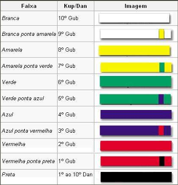

As graduações do Taekwondo geralmente são um assunto polêmico, pois cada grupo/equipe ou até mesmo entidade, com um [GRÃO MESTRE 7º Á 9º DAN] OU UM [MESTRE 4º Á 6º DAN] tem a liberdade de como será a ordem de faixa da sua academia ou equipe!
10º FAIXA BRANCA (10º GUB).
9º FAIXA BRANCA PONTA AMARELA (9º GUB).
8º FAIXA AMARELA (8º GUB).
7º FAIXA AMARELA PONTA VERDE (7º GUB).
6º FAIXA VERDE (6º GUB).
5º FAIXA VERDE PONTA AZUL (5º GUB).
4º FAIXA AZUL (4º GUB).
3º FAIXA AZUL PONTA VERMELHA (3º GUB).
2º FAIXA VERMELHA (2º GUB).
1º FAIXA VERMELHA PONTA PRETA (1º GUB).
(1º, 2º 3º POOM) CANDIDATO Á FAIXA PRETA.
É muito comum hoje em dia, alguns grupos de faixa que aboliram as faixas PONTA AMARELA E CANDIDATO! Pois as acham perda de tempo do aluno ou algum tipo de exame desnecessário. Também é muito comum alguns grupos e equipes não utilizarem as faixas ponta... preferindo usar faixas inteiras com outras cores no lugar, como por exemplo nas cores cinza, laranja, roxa, marrom etc...
